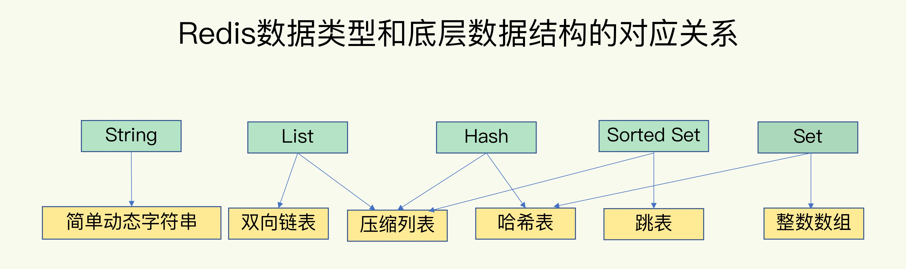
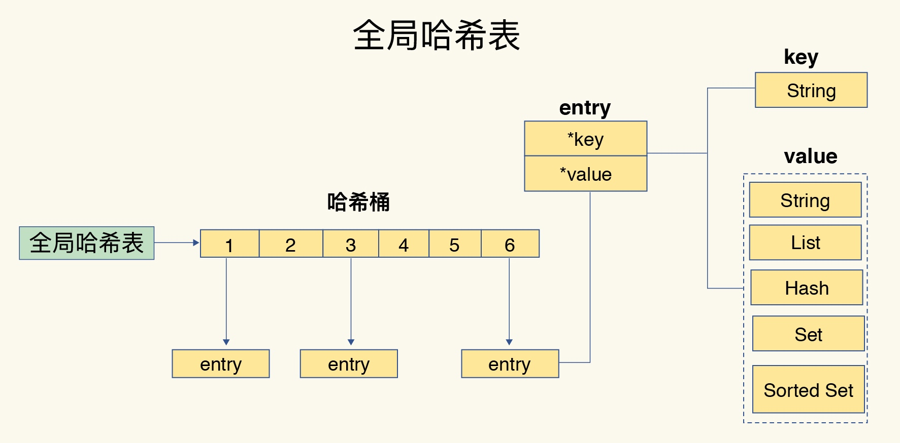
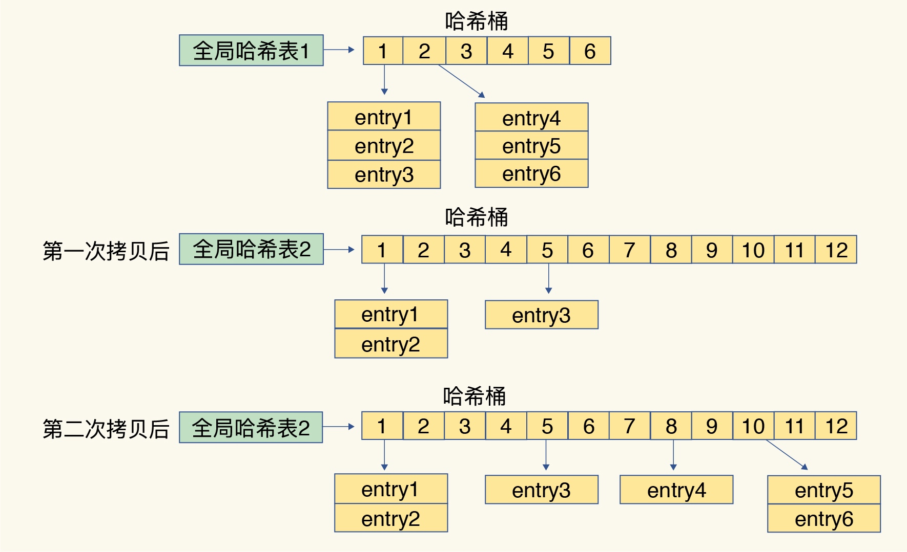
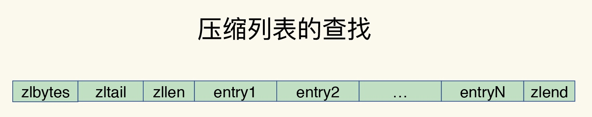
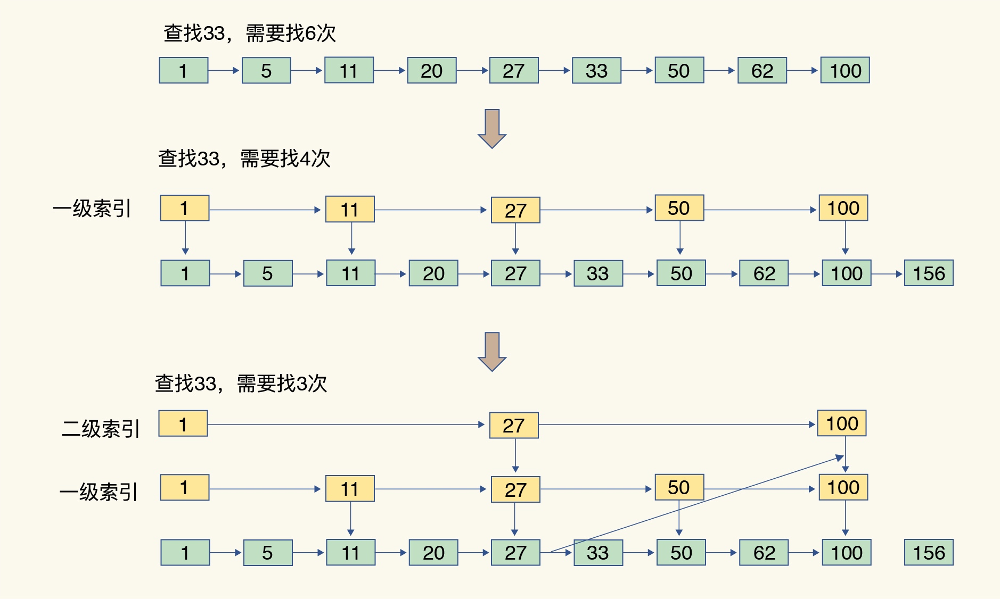

Redis常见慢操作
底层数据结构
- 
- 简单动态字符串、双向链表、压缩列表、哈希表、跳表和整数数组
键值对
- 通过哈希表来保存
- 
- 哈希桶中的 entry 元素中保存了key和value指针，分别指向了实际的键和值
哈希表冲突问题
- 链式哈希也很容易理解，就是指同一个哈希桶中的多个元素用一个链表来保存，它们之间依次用指针连接
rehash问题
- 哈希表 1 和哈希表 2。一开始，当你刚插入数据时，默认使用哈希表 1，此时的哈希表 2 并没有被分配空间，元素逐渐增多的时候
- 给哈希表2分配更大的空间，例如是当前哈希表 1 大小的两倍；
- 把哈希表 1 中的数据重新映射并拷贝到哈希表 2 中；
- 释放哈希表 1 的空间。
- 渐进式 rehash
- 拷贝数据时，Redis 仍然正常处理客户端请求，每处理一个请求时，从哈希表 1 中的第一个索引位置开始，顺带着将这个索引位置上的所有 entries 拷贝到哈希表 2 中
- 分摊拷贝开销
- 
压缩列表
- 压缩列表在表头有三个字段 zlbytes、zltail 和 zllen，分别表示列表长度、列表尾的偏移量和列表中的 entry 个数；压缩列表在表尾还有一个 zlend，表示列表结束
- 
- 第一个和最后一个元素都是O(1), 其他元素复杂度就是O(N)
跳表
- 跳表在链表的基础上，增加了多级索引，通过索引位置的几个跳转，实现数据的快速定位
- 
问题
- 整数数组和压缩列表在查找时间复杂度方面并没有很大的优势，那为什么 Redis 还会把它们作为底层数据结构呢？
- 内存利用率，数组和压缩列表都是非常紧凑的数据结构，它比链表占用的内存要更少。Redis是内存数据库，大量数据存到内存中，此时需要做尽可能的优化，提高内存的利用率
- 数组对CPU高速缓存支持更友好，所以Redis在设计时，集合数据元素较少情况下，默认采用内存紧凑排列的方式存储，同时利用CPU高速缓存不会降低访问速度。当数据元素超过设定阈值后，避免查询时间复杂度太高，转为哈希和跳表数据结构存储，保证查询效率